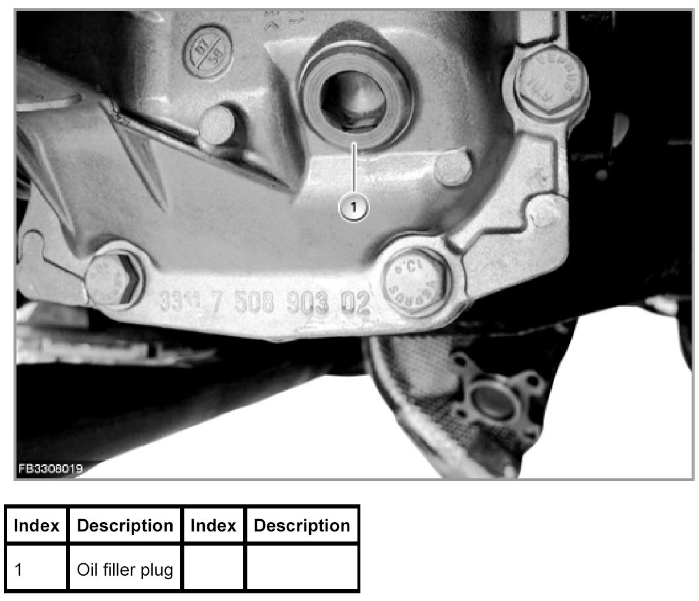
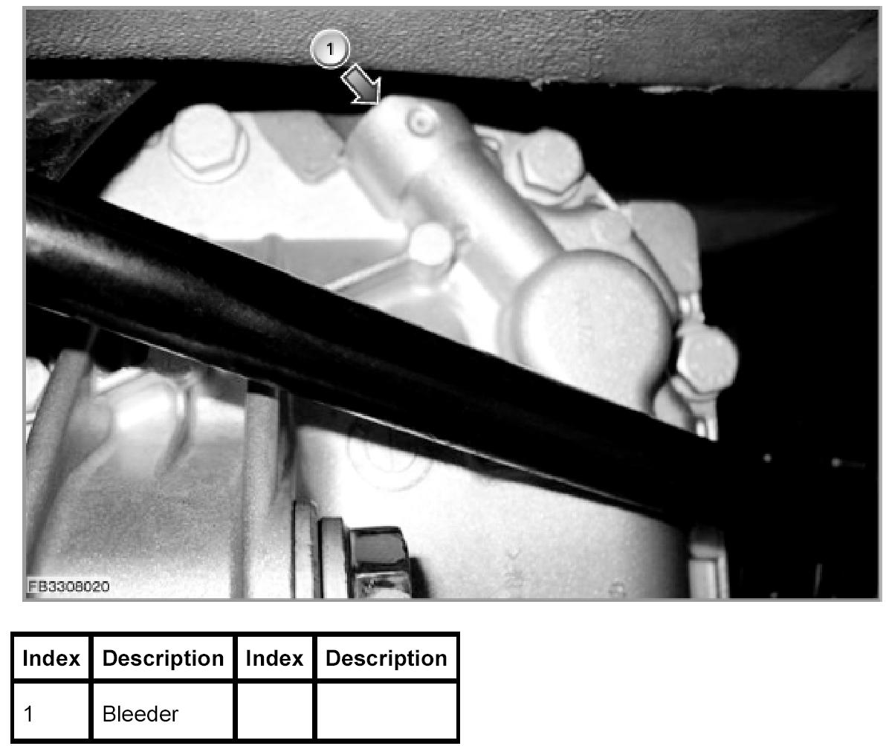
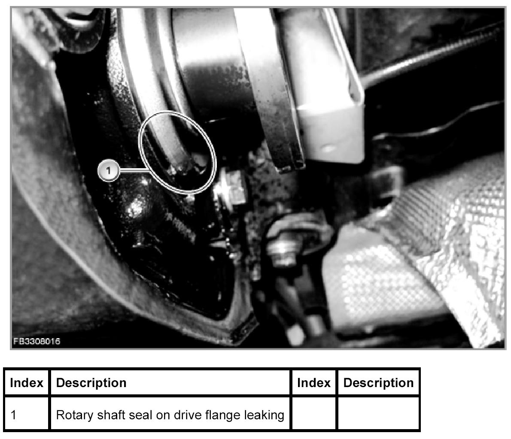
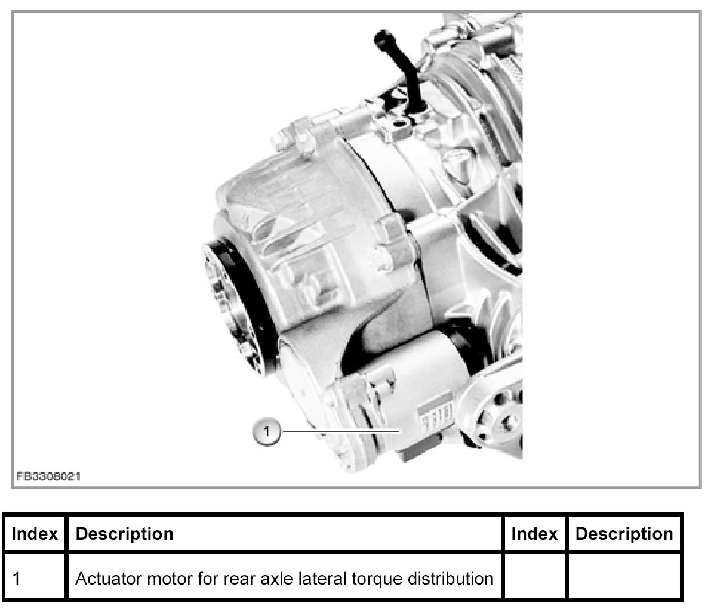

Leakage At Rear Axle Differential With QMVH
Leaks On The Rear Axle With Lateral Torque Distribution
The following list shows all the currently known fault patterns that can lead to leaks at the rear axle with lateral torque distribution. To localize the leak, sample pictures are shown after the list.
Procedure with leaks on the rear axle lateral torque distribution
Determine the cause of the fault on the vehicle and enter the fault code in the keypad field in the next test step. After entering the fault code, the repair instructions are displayed.
No Fault symptom
1 Oil filler plug leaking, see illustration
2 Oil temperature sensor leaking
3 Bleeder on rear axle differential leaking, see illustration
4 Rotary shaft seal on drive flange leaking, see illustration
5 Actuator motor on rear axle lateral torque distribution leaking, see illustration
6 Rear axle lateral torque distribution housing leaking
7 Leak on the output flange
99 The leak could not be localized on the basis of the list.
Fault pattern 1

Fault pattern 3

Fault symptom 4

Fault symptom 5
